<style>
    /* 基础排版设置 */
    :root {
        --primary-color: #0056b3;
        --secondary-color: #e6f2ff;
        --accent-color: #d9534f;
        --text-color: #333;
        --bg-color: #fff;
        --sidebar-bg: #f8f9fa;
        --border-color: #dee2e6;
    }

    body {
        font-family: "Helvetica Neue", Helvetica, Arial, "PingFang SC", "Hiragino Sans GB", "Microsoft YaHei", sans-serif;
        line-height: 1.8;
        color: var(--text-color);
        max-width: 900px;
        margin: 0 auto;
        padding: 40px 20px;
        background-color: var(--bg-color);
    }

    /* 章节标题 */
    .chapter-unit {
        margin-bottom: 80px;
    }

    h1.chapter-title {
        font-size: 3em;
        color: var(--primary-color);
        border-bottom: 4px solid var(--primary-color);
        padding-bottom: 20px;
        margin-bottom: 10px;
        line-height: 1.2;
    }

    h1.chapter-subtitle {
        font-size: 1.8em;
        color: #555;
        font-weight: 300;
        margin-top: 0;
        margin-bottom: 40px;
    }

    /* 节标题 */
    h2 {
        font-size: 1.8em;
        color: var(--primary-color);
        margin-top: 50px;
        margin-bottom: 20px;
        border-left: 5px solid var(--accent-color);
        padding-left: 15px;
    }

    h3 {
        font-size: 1.4em;
        color: #444;
        margin-top: 30px;
        font-weight: bold;
    }

    h4 {
        font-size: 1.1em;
        color: #666;
        margin-top: 25px;
        text-transform: uppercase;
    }

    p {
        margin-bottom: 1.2em;
        text-align: justify;
    }

    /* 侧边栏与特殊区域 */
    .sidebar {
        background: var(--sidebar-bg);
        padding: 25px;
        border-radius: 8px;
        margin: 30px 0;
        border: 1px solid var(--border-color);
    }

    .sidebar.blue {
        background: #f0f7ff;
        border-left: 5px solid var(--primary-color);
    }

    .sidebar.yellow {
        background: #fffdf0;
        border-left: 5px solid #f0ad4e;
    }

    .learning-objectives {
        background: #fff5f5;
        padding: 20px;
        border-radius: 8px;
        border: 1px solid #ffcccc;
        margin-bottom: 40px;
    }

    .concept-check {
        background: #e8f5e9;
        padding: 20px;
        border-left: 5px solid #4caf50;
        margin: 30px 0;
    }

    .concept-check h4 {
        color: #2e7d32;
        margin-top: 0;
        display: flex;
        align-items: center;
    }
    
    .concept-check h4::before {
        content: "✔";
        margin-right: 10px;
    }

    .ultimate-question {
        background: #222;
        color: #fff;
        padding: 30px;
        border-radius: 4px;
        margin: 50px 0;
    }
    
    .ultimate-question h3 {
        color: #ffd700;
        margin-top: 0;
    }

    /* 习题区域 */
    .exercises {
        background: #fdfdfd;
        padding: 30px;
        border-top: 2px solid #eee;
        margin-top: 60px;
    }

    .question-list {
        padding-left: 20px;
    }
    
    .question-list li {
        margin-bottom: 15px;
    }

    /* 图片处理 */
    .image-container {
        margin: 30px 0;
        text-align: center;
    }

    .image-placeholder {
        background-color: #e9ecef;
        border: 1px dashed #adb5bd;
        display: flex;
        align-items: center;
        justify-content: center;
        color: #495057;
        font-family: monospace;
        margin: 0 auto 10px auto;
        position: relative;
    }
    
    .image-placeholder::after {
        content: "🖼️ Image Area: " attr(data-label);
        font-size: 0.9em;
    }

    .caption {
        font-size: 0.9em;
        color: #666;
        text-align: left;
        margin-top: 10px;
        border-bottom: 1px solid #eee;
        padding-bottom: 15px;
    }
    
    .caption strong {
        color: var(--accent-color);
    }

    /* 表格 */
    table {
        width: 100%;
        border-collapse: collapse;
        margin: 20px 0;
        font-size: 0.9em;
    }
    
    th, td {
        border: 1px solid #ddd;
        padding: 12px;
        text-align: left;
    }
    
    th {
        background-color: #f2f2f2;
        font-weight: bold;
    }

    /* 科学符号优化 */
    sup {
        font-size: 0.75em;
        line-height: 0;
        position: relative;
        vertical-align: baseline;
        top: -0.5em;
    }
    sub {
        font-size: 0.75em;
        line-height: 0;
        position: relative;
        vertical-align: baseline;
        bottom: -0.25em;
    }
</style>
<article class="chapter-unit">
<!-- Chapter Header -->
<header>
<h1 class="chapter-title">第27章 早期宇宙</h1>
<h1 class="chapter-subtitle">回到时间的起源</h1>
</header>
<div class="image-container">
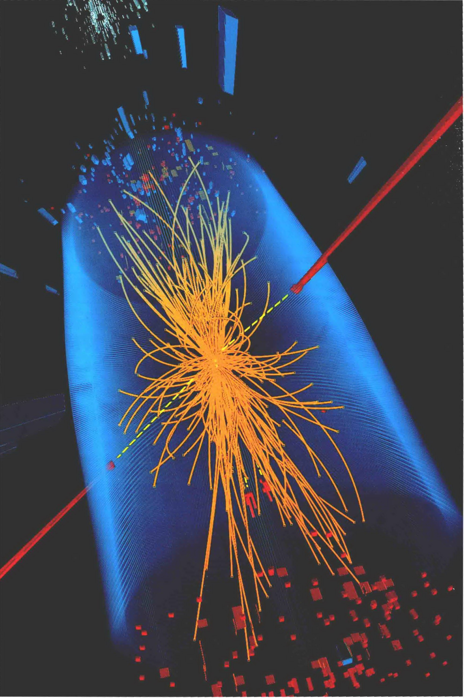
</div>
<!-- Introduction -->
<p>宇宙在最初几秒钟时的情况是什么样的？这些情况如何变成了我们今天所看到的宇宙？在研究我们的宇宙最早的瞬间时，我们进入了一个真正陌生的领域。随着我们朝着大爆炸回溯时间，我们习惯的东西一个接一个地溜走——原子消失了，然后是原子核，接下来甚至是基本粒子本身。</p>
<p>在开始的时候，宇宙由难以想象的高温的纯净能量组成。随着它的膨胀和冷却，古老的能量形成了粒子——这些粒子构成了今天我们所看到的我们身边的一切。现代物理学现在已经到了一个点，几乎可以达到大爆炸本身那一瞬间，允许科学家揭开开端的一些奥秘。</p>
<!-- Learning Objectives Sidebar -->
<aside class="learning-objectives">
<h3>学习目标</h3>
<p>本章的学习将使你能够：</p>
<ul>
<li>描述宇宙刚刚诞生时的特性。</li>
<li>解释物质是怎么从原始火球中产生的。</li>
<li>描述辐射与物质是如何参与宇宙的膨胀和冷却的。</li>
<li>描述最简单的原子核是在何时以及如何形成的。</li>
<li>解释第一个原子形成的重要性。</li>
<li>总结视界和平度问题，描述宇宙膨胀理论如何解决它们。</li>
<li>描述宇宙大尺度结构的形成。</li>
<li>解释对微波背景辐射的研究如何让天文学家测试和量化他们的宇宙模型。</li>
</ul>
</aside>
<!-- Knowledge Panorama Sidebar -->
<aside class="sidebar blue">
<h3>知识全景</h3>
<p>现代宇宙学做出了令人震惊的预测，整个可观测宇宙可以在极早期——大爆炸后几分之一秒——被迫溯到微观的“量子”起伏。宇宙的大尺度结构与物理学上已知的最小尺度是密不可分的。</p>
</aside>
<div class="caption">
<strong>左图：</strong>在日内瓦附近的瑞士-法国边境的地下，科学家们使用世界上最大的物理实验室来比以往任何时候都更深入地探索物质。大型强子对撞机模拟发生在宇宙起源后1s内的亚原子粒子的猛烈碰撞事件。这里，在一个被蓝色遮蔽的探测器内部，两个质子（红色条纹）发生碰撞，产生粒子的喷射（黄色），使科学家得以检测他们关于宇宙是如何开始的最好理论。[欧洲核子研究中心(CERN)]
    </div>
<!-- Section 27.1 -->
<h2>27.1 回到大爆炸</h2>
<p>在最大尺度上，宇宙是一个由大致均匀的物质（主要是暗的）、辐射和暗能量所组成的混合体。(4.5节) 正如我们已经看到的，“物质”包括由质子、中子和电子组成的正常物质，以及组成的天文学家仍在争论的暗物质。暗能量是弥漫在貌似真空的星系际空间的神秘排斥力。我们最多可以说，我们生活在一个几何“平直”的宇宙中，其中，宇宙所有成分的总质量-能量密度精确地等于临界值。(4.3节、4.4节、4.6节) 根据理论模型，宇宙中没有足够的物质可以让引力战胜暗能量的斥力，扭转目前的膨胀。</p>
<p>因此，宇宙的未来似乎很清楚：宇宙注定要永远膨胀下去。在本章中，我们将注意力转向过去。要了解早期——即大爆炸之后很短的时间——的宇宙，我们必须更密切地关注物质、辐射和暗能量在宇宙中所扮演的角色。首先，我们盘点它们对宇宙总能量密度的贡献。</p>
<h3>宇宙的组成</h3>
<p>基于现有最好的观测数据，宇宙学家认为，今天，宇宙中超过70%的质量-能量以暗能量的形式存在。(4.6节) 而剩余的30%几乎都是物质。因此，就目前而言，暗能量主宰着宇宙密度，物质位居次席，不过差距很大。我们可以用第4章的结果来量化刚才的描述。取哈勃常数 $H_0=70km/ (s \cdot Mpc)$，临界密度为 $9 \times 10^{-27} kg/m^3$ (4.3节)。因此，总体而言今天宇宙中暗能量的密度略大于 $6 \times 10^{-27} kg/m^3$，当前的物质密度略小于 $3 \times 10^{-27} kg/m^3$。</p>
<p>宇宙中大部分辐射是以宇宙微波背景——充满了所有空间的低温(3K)辐射场——的形式存在。(4.7节) 令人惊讶的是，虽然微波背景辐射非常微弱，但它仍含有比曾经存在的所有恒星和星系发出的能量更多的能量！其原因是，恒星和星系虽然是很激烈的辐射源，但只占据了一小部分空间。将这些能量平摊到整个宇宙的体积中，就会比微波背景辐射的能量低至少10倍。那么，对于我们当前的讨论主题，我们暂且把宇宙微波背景作为宇宙中辐射的唯一重要形式。</p>
<p>辐射是否在宇宙的大尺度演化中扮演了重要的角色？为了比较物质和辐射，我们必须像往常一样，先将它们转换成一个“共同货币”——无论是质量或能量。我们将比较它们的质量。我们可以将微波背景中的能量等效地表达为密度——首先通过计算任意单位空间中的光子数，然后再使用关系式 $E=mc^2$ 将这些光子的总能量转化为质量。当我们这样做时，我们得到微波背景的等效密度为约 $5 \times 10^{-31} kg/m^3$。因此，在当前，暗能量和物质在宇宙中的密度远远超过辐射的密度。</p>
<h3>宇宙中的辐射</h3>
<p>宇宙是否一直被暗能量主导？要回答这个问题，我们必须要了解暗能量、物质和辐射的密度如何随着宇宙的膨胀而改变。为此，宇宙学家构造了宇宙的理论模型，考虑到爱因斯坦广义相对论的影响，结合已知的物质和辐射的性质并将其假设为暗能量的性质。这些模型描述宇宙中的量（如不同成分的密度）如何随着宇宙的演化而变化。他们还做出可以直接与观测相比较的详细预测。模型和现实之间显著的一致 (27.5节) 是天文学家倾注了这么多心血对宇宙的密度、成分和在前面章节中描述的演化进行测量的最主要原因。</p>
<div class="image-container">
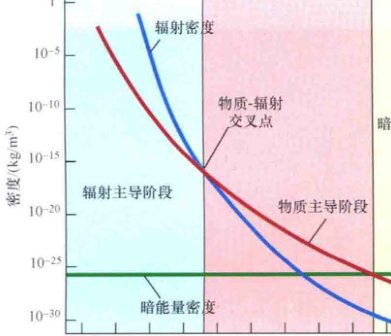
<div class="caption">
<strong>图27.1 辐射-物质主导</strong><br/>
            随着宇宙的膨胀，每单位体积的物质粒子和光子的数量减少。光子的能量因为宇宙学红移而被额外降低。其结果是，随着宇宙的成长，辐射密度（蓝色曲线）比物质密度（红色曲线）下降得更快，在早期的时候，在交叉点之前，辐射主导着物质。今天，暗能量（绿线）主导着物质和辐射。
        </div>
</div>
<p>如图27.1所示，模型表明，随着宇宙尺度的增加，物质和辐射的密度都在下降，就像膨胀稀释了原子和光子的数目一样。而且辐射的能量也因为宇宙学红移而减少，因此，随着宇宙成长，辐射密度下降的速度比物质密度下降的速度更快。暗能量的行为是一个非常不同的方式。根据理论，它是一个大尺度现象，随着宇宙膨胀（见图4.12）越来越重要。实际上（如果它的行为就像爱因斯坦的宇宙学常数），随着宇宙的膨胀，与暗能量相关的密度保持恒定。(探索4-1)</p>
<p>因此，当我们逆着时间回头看且越来越接近大爆炸时，辐射密度比物质密度增加得更快，它们俩增加的速度又比暗能量密度增加得快。这些事实使我们得出关于过去宇宙组成的两个重要的结论：</p>
<ol>
<li>虽然暗能量主导了今天的宇宙密度，但它在早期时代是不重要的，并且在我们的讨论中可以忽略在极早期宇宙条件下的暗能量，天文学家估计，物质和暗能量的密度在约40亿年前是相等的。在那之前，以宇宙学的说法，宇宙是由物质主导的。</li>
<li>虽然在目前，辐射密度远小于物质密度，但在更为久远的过去的某段时间，它们必然也是相等的。在那时之前，辐射是宇宙的主要组成部分，被称为<strong>辐射主导</strong>。交叉点——物质和辐射密度相等的时候——发生在大爆炸之后约50,000年，当时的宇宙比今天小6000倍左右。当时的背景辐射的温度约16,000K，所以它的峰值在光谱的近紫外部分。(4.7节)</li>
</ol>
<p>在这套书中，我们一直关注宇宙成为物质主导和（或）暗能量主导后很久以后的历史——随着宇宙朝着我们今天看到的状态变稀薄和变冷，星系、恒星和行星形成并演化。在这一章中，我们考虑一些重要事件——在很早期的、热的、辐射主导的宇宙中，远在任何恒星或星系存在之前——它们对决定宇宙的现状起着重要的作用。</p>
<h3>粒子产生</h3>
<p>微波背景辐射的存在意味着，早期宇宙被强烈的辐射场主导，该辐射场的温度随着宇宙的膨胀而稳步下降。在这些时候，占优势的温度和密度远远大于迄今为止我们所遇到的——即使是在超新星的核心。为了了解大爆炸后不久的条件，我们必须更深入地钻研在非常高的温度下的物质和辐射的行为。</p>
<p>了解非常早的事件的关键在于被称为<strong>粒子对产生</strong>的过程，其中两个光子产生一个粒子-反粒子对，如图27.2(a)所示的电子和正电子的具体情况。通过粒子对的产生，物质从以电磁辐射形式存在的能量中直接创建。也可能发生相反的过程：一个粒子和它的反粒子相互湮灭并产生辐射，如图27.2(b)所示。以辐射形式存在的能量可以转化为以粒子和反粒子形式存在的物质，粒子和反粒子可以转换回辐射——它们服从质量和能量守恒定律。</p>
<div class="image-container">

<div class="caption">
<strong>图27.2 粒子对产生</strong><br/>
            (a) 两个光子可产生一个粒子-反粒子对——如果它们的总能量超过所产生的粒子的质量-能量。在本例中产生了一个电子-正电子对。(b) 相反的过程是粒子-反粒子湮灭。在本例中是一个电子和一个正电子互相摧毁，消失在一束伽马射线中。(c) 这是实际观测，在亚微观尺度，给出了两个伽马射线（其路径在左边是不可见的，因为它们是电中性的）撞出一个原子中的电子，并让其飞起来（最长的轨道）。在同一时间，该伽马射线提供足够的能量，以产生电子-正电子对（螺旋形的路径，其曲线在探测器磁场中位于相反方向，因为它们有着相反的电荷）。[费米实验室 (Fermi Laboratory)]
        </div>
</div>
<p>一个辐射场的温度越高，其典型成分光子的能量越大，通过粒子对产生而创建的粒子的质量也越大。对于任何给定的粒子，有一个被称为粒子的<strong>阈值温度</strong>的概念。这是一个临界温度，高于它，粒子对产生是可能的；低于它，粒子对产生就是不可能的。阈值温度随着粒子质量的增加而增加。对电子，它约是 $6 \times 10^9 K$。对质子——比电子质量大近2000倍——它刚刚超过 $10^{13} K$。</p>
<div class="image-container">
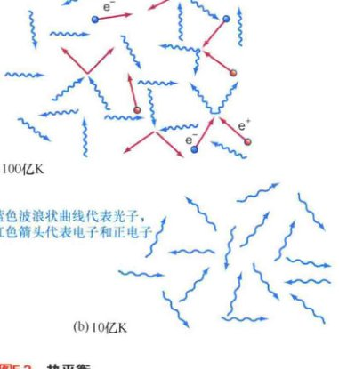
<div class="caption">
<strong>图27.3 热平衡</strong><br/>
            (a) 在100亿K的高温下，大部分光子有足够的能量来产生粒子-反粒子对（电子-正电子对），所以这些粒子数量庞大，能够与辐射平衡。(b) 在约10亿K以下，光子的能量太少，不足以使粒子对产生发生，所以电子和正电子不再与背景辐射场处于热平衡状态。
        </div>
</div>
<p>作为粒子对产生如何影响早期宇宙的组成的一个例子，考虑随着宇宙的膨胀和冷却，电子和正电子的产生。在高温下——高于 $10^{10} K$——大多数光子有足够的能量来形成电子或正电子，粒子对产生是司空见惯的。空间因为电子和正电子而“沸腾”——它们不断地被辐射场创建，然后再彼此消灭，并再次形成光子。粒子和辐射被认为已经处于热平衡状态：粒子对产生和创造新的粒子-反粒子的速度与它们彼此湮灭的速度相等。随着宇宙的膨胀，温度下降，平均光子能量也下降。到温度跌破10亿开尔文的时候，光子不再有足够的能量让粒子对产生发生，只有辐射留了下来。图27.3描绘了这种变化是如何发生的。</p>
<p>极早期宇宙中的粒子对产生是今天的宇宙中存在的所有物质的直接原因。我们看到我们周围的一切都是随着宇宙的膨胀和冷却而从辐射中被创造出来的。因为我们在思考这个问题，我们知道有些物质必然从早期的那些暴力时刻中幸存下来。出于某种原因，在早期的时候，物质略微超过反物质——每十亿个质子-反质子对大约多出一个额外的质子。这些在数量上多于它们的反粒子的少量残渣随着温度下降到低于能创造它们的阈值而残留下来。没有剩下的反粒子来消灭它们，颗粒的数目一直恒定保持至今。随着宇宙的膨胀和冷却，这些幸存者被认为从辐射场<strong>冻结</strong>出来。</p>
<!-- Section 27.2 -->
<h2>27.2 宇宙的演化</h2>
<p>在大爆炸后最初的几千年，宇宙是小而致密的、由辐射主导的。我们将这一时期称为<strong>辐射期</strong>。有些物质在此期间存在，但它只是原始大爆炸火球的盲目的伽马射线的污染物。之后，在<strong>物质期</strong>，物质变成了主导。随着宇宙朝着我们今天看到的状态冷却和变稀疏，原子、分子和星系形成了。今天，我们生活在<strong>暗能量期</strong>，暗能量正在成为宇宙中越来越重要的组成部分。</p>
<p>让我们对早期宇宙的研究从对开始于大爆炸的宇宙历史的总体时代的概述开始。图27.4描绘了宇宙的温度和密度是如何在辐射期和物质期迅速下降的，并确定了宇宙发展的8个显著时代。请注意随着我们从左往右，水平轴上的时间尺度是如何从1s的一小部分增加到数千年的——宇宙的变化率随着宇宙膨胀很明显地大幅放缓。我们将在未来的几节里更加详细地专注于这些时代，但我们不能忽视大的图景和各个时代所在的地方。</p>
<div class="image-container">

<div class="caption">
<strong>图27.4 宇宙历史的时代</strong><br/>
            贯穿宇宙历史的平均温度和平均密度。在最早的时候，宇宙是一个辐射的海洋，只有一种统一的自然力。随着宇宙的膨胀和冷却，宇宙历史上后来的一些关键事件被标了出来，我们将在后面的章节中进行讨论。
        </div>
</div>
<aside class="sidebar yellow">
<h3>在大爆炸之前？</h3>
<p>大爆炸是时空的<strong>奇点</strong>——目前的物理定律表明，宇宙大小为零且有着无限的高温和密度的一瞬间。正如我们在《今日天文——恒星：从诞生到死亡》第11章中看到的——当时我们讨论了黑洞中心的奇点——这些预测不应该过于按照字面意思去理解。奇点的存在释放出这样的信号：在极端条件下，做出预测的理论——在这种情况下是广义相对论——已经被破坏了。</p>
<p>目前，还没有理论能让我们越过宇宙开始时的奇点。我们没有方法能描述这些最早的时候，所以我们也没有办法回答这个问题——“在大爆炸之前是什么？”事实上，由于我们目前所了解的物理规律，这个问题本身可能毫无意义。大爆炸代表整个宇宙的开端——能量、空间和时间在那一瞬间才出现。在没有时间的情况下，“之前”这个概念便不存在。因此，一些宇宙学家认为，询问在大爆炸之前发生了什么，有点像问北极的北边有什么一样！然而有些人不同意，认为当正确的量子引力理论——所谓的“关于一切的理论”，统一了引力和量子力学——被建立起来后，会消除奇点，使我们能够知道在大爆炸之前是什么。</p>
</aside>
<h3>宇宙的诞生</h3>
<p>虽然可以忽略创世本身的那一刻，但理论家仍然认为，根据今天的物理学，我们只能了解大爆炸后一个非常短的时间——事实上仅为 $10^{-43}s$——之后的宇宙中的物理环境。</p>
<p>为什么理论家不能把我们的知识应用于大爆炸本身？答案是，我们目前没有一种理论能够描述在最早期的宇宙。在大爆炸后仅 $10^{-43}s$ 时，宇宙处于极高温和极高密度的极端环境中，引力和其他基本力（电磁力、强力、弱力，详见详细说明5-1）不能被区分——与我们今天看到这些力有完全不同的特点，见表27.1。这四种力在早期据说是<strong>统一</strong>的——在效果上，只有一种自然力。</p>
<!-- Sidebar: Detailed Explanation 5-1 -->
<aside class="sidebar blue" id="detailed-explanation-5-1">
<h3>探索5-1：关于基本力的更多知识</h3>
<p>我们曾指出，宇宙中所有物质的行为是由三个基本力支配的：引力、电弱力（电磁力和弱力的统一）、强（核）力。在地面实验室中，这些力显示出来的性质互相之间有很大的不同（表27.1）。引力和电磁力是长距离、遵循平方反比的力，而强力和弱力的有效范围很短——分别为 $10^{-15}m$ 和 $10^{-17}m$。此外，这些力并不是作用于同样的粒子。引力作用于一切；电磁力只作用于带电粒子；强力在原子核粒子——如质子和中子——之间起作用，但它不作用于电子和中微子；弱力在某些特定的核反应和放射性衰变中展现出来。强力比电磁力强137倍，比弱力强100,000倍，比引力强 $10^{39}$ 倍。</p>
<p>事实上，在原子核层次之下有更多的结构。质子和中子不是大自然真正的“基本”粒子，它们实际上是由被称为<strong>夸克</strong>的亚微观粒子构成的。（这个名字来源于小说家詹姆斯·乔伊斯的著作《芬尼根守灵夜》中创造的一个毫无意义的词。）根据目前的理论，宇宙中有6种不同类型的夸克（它们的名字很隐晦：上、下、粲、奇、底、顶）。我们所说的强力实际上是将夸克彼此结合在一起的相互作用的表现。</p>
<p>从表面上看，人们可能想象不到，刚才描述的完全不相似的力之间有任何隐含的、更深层次的联系，但有确凿证据表明，它们真的只是单一的基本现象的不同方面。在20世纪60年代，理论物理学家成功地用电弱力来解释电磁力和弱力。此后不久，又进行了将强力和电弱力结合成一个单一的、无所不包的“<strong>超力</strong>”的第一次尝试。现代版的这个超力的一个中心思想是，通过强力而相互作用的夸克，与只受电弱力作用的、被称为<strong>轻子</strong>的粒子之间是一一对应的。六种已知类型的夸克与六种不同类型的轻子——电子，两种相关的“类电子”粒子（称为μ介子和τ介子）和三种类型的中微子——成对。</p>
<p>将强力和电弱力结合在一起的理论一般被称为<strong>大统一理论</strong>，缩写为GUTs。（请注意，这个词是复数——目前尚无某个GUT被证明是对大自然唯一正确的描述）。对大统一理论的一个总体预测是，这三个非引力的力只有在极端高能的情况下才是无法区分的——对应的温度超过 $10^{28}K$。在该温度之下，超力分裂成两个，显示出单独的强力和电弱力特点。按照粒子物理学的说法，我们说，在强力和电弱力之间有一个<strong>对称</strong>，这个对称在温度低于 $10^{28}K$ 时会破缺，让这两个力的不同特征显现出来。在“低”温时——低于约 $10^{15}K$，这个温度覆盖我们所知的在地球和恒星上几乎所有东西的范围——有第二个对称破缺，电弱力分裂，显露出我们更熟悉的电磁力和弱力的性质。</p>
<p>电弱理论的关键预测在20世纪70年代得到了实验验证，让理论的原创者（谢尔登·格拉肖、史蒂文·温伯格和阿布杜思·萨拉姆）获得了1979年的诺贝尔物理学奖。大统一理论尚未得到实验验证（或否定），这在很大程度上是因为，必须达到极高的能量才能观测它们的预测。</p>
<p>强力和电弱力是可以统一的！认识到这一点，便引发了一个更快乐的思想，即<strong>超对称</strong>的概念——将基本力存在的对称的想法扩展到让所有粒子——那些与力起作用的粒子（如质子和电子）和那些传播这些力的粒子（如光子和胶子，27.4节）——都平等。超对称的一个特别重要的预测是，所有的粒子都有所谓的<strong>超对称伙伴</strong>——必须存在的以便使理论保持自洽的额外的粒子。所有这些新粒子尚未被发现，但许多物理学家确信该理论是正确的。</p>
<p>这些新的粒子，如果它们存在的话，在大爆炸中就会产生很多，今天应该仍然在我们周围。预计它们的质量也将是非常大的——至少比质子重1000倍。这些新的粒子——所谓的超对称遗迹，是目前领先的宇宙中暗物质的候选体。(27.5节)</p>
<p>将引力包括在这幅图景中的努力迄今一直没有成功。引力尚未被纳入一个单一的“超统一理论”——在这一理论中，所有的基本力都被合并在一起。一些将引力与其他力合并的理论努力试图通过假定额外的传输引力的粒子——称为<strong>引力子</strong>而令引力适用于量子理论。然而，这是一个与爱因斯坦的广义相对论展示的几何图形完全不同的引力的视角，将这两者结合成一个统一的量子引力理论被证明是非常困难的。</p>
<p>一个目前正在积极探索的有前途的理论，旨在利用被称为<strong>弦</strong>的亚微观物体以特别的模式振动来解释所有的粒子和力。<strong>弦理论</strong>是复杂的，但它解决了许多棘手的技术问题，许多理论家认为，它目前对统一自然力提供了最大的保证。虽然如此，但我们仍然要意识到，目前没有理论能成功地对极早期宇宙的环境做出任何明确的说法。一个完整的量子引力理论在继续困扰着研究人员。</p>
</aside>
<div class="caption">
<strong>表27.1 基本力和粒子</strong>
</div>
<table>
<thead>
<tr>
<th>力度</th>
<th>范围/m</th>
<th>起作用的粒子</th>
<th>统一（温度）</th>
</tr>
</thead>
<tbody>
<tr>
<td>强力</td>
<td>$10^{-15}$</td>
<td>夸克组成的物质（质子、中子等）</td>
<td rowspan="3">大统一理论/超力 ($10^{28}K$)</td>
</tr>
<tr>
<td>电磁力</td>
<td>无限</td>
<td>带电粒子（质子、电子等）</td>
</tr>
<tr>
<td>弱力</td>
<td>$10^{-17}$</td>
<td>轻子（电子、μ介子、τ介子、中微子）</td>
</tr>
<tr>
<td>引力</td>
<td>无限</td>
<td>一切</td>
<td>量子引力 ($10^{32}K$)</td>
</tr>
</tbody>
</table>
<p>结合量子力学（对微观现象的正确描述）与广义相对论（描述最大尺度上的宇宙）的理论一般被称为<strong>量子引力论</strong>。从大爆炸开始到 $10^{-43}s$ 这段时间通常被称为<strong>普朗克时代</strong>，以量子力学的创造者之一马克斯·普朗克命名。不幸的是，至少在目前还没有得出可行的理论，所以我们根本无法有意义地讨论在普朗克时代的宇宙。</p>
<p>到普朗克时代的结束，温度为约 $10^{32}K$，宇宙充满了辐射和由粒子对产生机制创造的众多亚原子粒子。大约在那个时候，引力从其他的自然力中分离出来——从那时起，它与其他力不同了，并自那以后一直保持独特性。而强力、弱力和电磁力还是统一的。描述这个时代的现代理论被统称为<strong>大统一理论</strong>，缩写为GUTs（见详细说明5-1）。因此，我们将这一时期称为<strong>大统一时代</strong>。</p>
<h3>冻结</h3>
<p>大统一理论预测，大自然四个基本力之中的三个——电磁力，以及原子核中的强力和弱力——实际上是一个单一的、无所不包的“超力”的不同方面。但是，这种统一明显只在极高能量下才会出现——对应的温度超过 $10^{28}K$。在较低的温度下，超力显示出其单独的电磁力、强力、弱力的方面。</p>
<p>粒子物理学的一个基本概念是这样一个想法：基本粒子之间的力靠另一种类型的被统称为<strong>玻色子</strong>的粒子的交换而起作用或被介导。我们可以将两个粒子想象为在玩快速抛掷游戏，将玻色子作为一个球，如图27.5所示。当球被来回抛时，力就被传递了。例如，在普通的电磁学中，所涉及的玻色子是<strong>光子</strong>——总是以光速运行的电磁力的集合。强力是由被称为<strong>胶子</strong>的粒子介导的。电弱理论共包括四个玻色子——无质量的光子和其他三个大质量的粒子，被称为（由于历史原因）$W^+$、$W^-$ 和 $Z^0$。所有这些粒子已经在实验室的实验中被观测到了。以此类推，引力（在理论上）是被<strong>引力子</strong>介导的。所有我们目前在这本书中遇到的粒子——电子、质子、中子、中微子——都会至少“抓”住这些“球”中的一些。</p>
<div class="image-container">
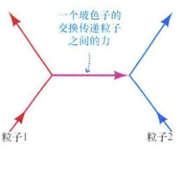
<div class="caption">
<strong>图27.5 基本力</strong><br/>
            粒子之间的基本力通过其他被称为玻色子的粒子的交换来传输。当两个粒子相互作用时，它们交换玻色子，有点儿像玩亚微观球的抛掷游戏。
        </div>
</div>
<p>在第27.1节中，我们看到粒子是如何从宇宙中被“<strong>冻结出来</strong>”的——随着宇宙的温度降到令粒子对的产生活动停止的阈值温度以下。现在我们知道，自然界的基本力是被粒子介导的，我们也可以明白——至少在总体上——随着宇宙的冷却，基本力是如何冻结的。根据大统一理论，统一强力和电弱力的粒子是非常大质量的——至少有质子质量的 $10^{15}$ 倍（可能还要大得多）。正是因为这个粒子是如此大质量的，强力和弱电力的统一才仅在极高的温度下才会变得明显。</p>
<p>在低于 $10^{28}K$ 的温度下，强核力与电弱力（弱力和电磁力的统一）区别开来。一旦宇宙冷却到那个温度——在大爆炸后大约 $10^{-35}s$ ——大统一时代就结束了。根据很多大统一理论，那个时代的一个重要遗产可能是形形色色的基本粒子——只与正常物质有非常微弱的相互作用的非常大质量（尚未观测到）的奇异粒子——的出现和随后的冻结出来。这些“奇异”的粒子是暗物质——被认为大量存在于星系内和星系际空间看不见的深处的未知成分——的最佳候选体。(1.6节、3.1节)</p>
<h3>夸克和轻子</h3>
<p>我们下一个对辐射期的主要细分涵盖了这样一个时期——所有“重”的基本粒子——也就是说，按照质量从高到低：质子、中子和组成它们的夸克——与辐射处于热平衡。我们将这一时期称作<strong>夸克时代</strong>，因为夸克是通过强力而相互作用的所有粒子的基本组成部分。</p>
<p>宇宙继续膨胀和冷却。在温度约 $10^{15}K$（大爆炸后 $10^{-10}s$）时，电弱力中的弱力和电磁力开始显示其各自的特征。负责电弱力的W粒子和Z粒子的质量是质子质量的约100倍。它们产生的阈值温度——大约 $10^{15}K$ ——标记出弱力和电磁力分道扬镳的这个点。</p>
<p>大爆炸之后大约0.1ms ($10^{-4}s$)，温度已降至远低于 $10^{13}K$，这是创造质子和中子（夸克组成的最轻的稳定粒子）的阈值温度，夸克时代结束了。现在，宇宙的主要成分是轻质粒子——μ介子（详细说明5-1）、电子、中微子和它们的反粒子——它们与辐射仍处于热平衡中。比较这些较轻粒子的数目，在这个阶段只剩下极少数的质子和中子，大多数都被消灭了。</p>
<p>电子，μ介子和中微子被统称为<strong>轻子</strong> (leptons)，这个词的词源是希腊词“轻的”（即不重）。因此，我们把宇宙历史的这一时期称为<strong>轻子时代</strong>。在那个时代，在温度约为 $3 \times 10^{10}K$ 的情况下——大爆炸后大约1s——迅速变稀薄的宇宙变得对中微子透明，这些幽灵般的粒子从那以后便可以自由在空间中穿梭。（自从宇宙诞生几秒钟以后，大多数中微子便不与其他任何粒子相互作用了！）当宇宙年龄大约是100s时，轻子时代结束了，温度下降至约 $10^9K$ ——这个温度太低，以至于电子-正电子对的产生不能发生。这个时候，宇宙的密度是水密度的10倍左右。</p>
<p>当质子和中子开始融合成较重的原子核时，辐射期最后的显著事件发生了。在这个时期的开端——我们将其称之为<strong>核时代</strong>——温度是几亿开尔文，融合发生得非常迅速，在环境变得太冷以至于进一步的反应不能发生之前，接连快速地形成了氘（“重”氢）和氦。到那时，宇宙的年龄大约是15min，很多我们今天所观察到的氦已经形成。</p>
<h3>物质和暗能量期</h3>
<p>随着时间的流逝，宇宙不断膨胀并冷却，辐射让位给物质，后者成为宇宙的主导成分。我们的下一个主要时代在时间上从大爆炸后50,000年（辐射期结束）延伸至大约1亿年。由于原始火球的强度减弱，一个至关重要的变化发生了——也许是宇宙历史上最重要的变化。在核时代的结尾，辐射仍然压倒物质。与质子和电子的结合一样快，辐射再次打破它们将它们分开，阻止了即使是最简单的原子或分子的形成。然而，随着宇宙的膨胀和冷却，早期的辐射主导的情况最终结束了。原子一旦形成，就会保持完整。我们称这个时期为<strong>原子时代</strong>。它在大爆炸后100万年结束。那时，第一代恒星形成了，它们强烈的辐射让宇宙再电离。</p>
<p>最后两个时代一起带领我们到宇宙目前的年龄。在这些靠后的时期，变化以更稳重的步伐发生。在宇宙大约30亿岁的时候，大尺度结构和大多数星系形成了。第一次，宇宙在宏观尺度上不再均匀。辐射期总体均匀的宇宙成了包含巨大物质团块的宇宙。我们把大爆炸后2亿年到30亿年这段时期称为<strong>星系时代</strong>，因为当时的主要事件都与星系的构建有关。在它结束时，大尺度结构和大多数星系的主要部分已经形成，类星体在明亮地闪耀，初代恒星在燃烧和爆炸，帮助决定它们的母星系未来的形状。</p>
<p>从那时起，星系继续并合和演化，恒星形成率达到高峰，行星和生命出现在宇宙中。最后这两个时代，包括当前的<strong>恒星时代</strong>——之所以这样命名，是为了那些在星系内正在形成的无数恒星。</p>
<div class="concept-check">
<h4>概念理解检查</h4>
<p><strong>✔ 为什么越来越轻的粒子随着宇宙的膨胀而从宇宙中“冻结出来”？</strong></p>
</div>
<!-- Section 27.3 -->
<h2>27.3 原子核和原子的形成</h2>
<p>我们现在有了完成我们的元素创造故事的所有原料。恒星核合成理论非常好地解释了观测到的宇宙中重元素的丰度，但当涉及轻元素（尤其是氦）的丰度时，也有理论和观测之间的差异。简而言之，今天宇宙中氦的总量——以质量算约占25%——这个量太大了，无法只用恒星的核聚变来加以解释。广为接受的解释是，氦的这个基本水平是原初的——也就是说，它在宇宙早期很热的时代，在任何恒星形成之前，就被创造出来了。大爆炸后不久，通过核聚变生产比氢重的元素的过程被称为<strong>原初核合成</strong>。</p>
<h3>早期宇宙中氦的形成</h3>
<p>大爆炸后约100s，温度已下降到约10亿开，从“奇异的”暗物质粒子中分离出来，宇宙中的物质由电子、质子和中子组成——在数量上，质子超过中子，比例约5:1。发生核聚变的舞台已经搭好。质子和中子结合产生氘原子核（简称为氘核），含有一个质子和一个中子：</p>
<p style="text-align: center; font-weight: bold;">$^1H$ (质子) + 中子 $\rightarrow$ $^2H$ (氘) + 能量</p>
<p>虽然这种反应在轻子时代必然频繁发生，但当时的温度还是如此高，以至于氘原子核在它们形成时就被高能伽马射线打碎了。宇宙不得不等待，直到它变得足够冷，氘才能生存下去。这段等待时间有时也被称为<strong>氘瓶颈</strong>。</p>
<p>只有当宇宙的温度跌破大约9亿开时——在大爆炸后大约2min，氘终于能够形成和持续。一旦这件事发生，氘迅速通过众多反应转化为较重的元素，包括：</p>
<div style="text-align: center;">
<p>$^2H + ^1H \rightarrow ^3He + \text{能量}$</p>
<p>$^2H + ^2H \rightarrow ^3He + \text{中子} + \text{能量}$</p>
<p>$^3He + \text{中子} \rightarrow ^4He + \text{能量}$</p>
</div>
<p>其结果是，一旦宇宙通过了氘瓶颈，融合便迅速进行，形成大量的氦。在短短的几分钟内，大多数自由中子都被消灭了，留下了一个物质含量主要是氢和氦的宇宙。图27.6描绘了一些导致氦形成的反应。将其与《今日天文——恒星：从诞生到死亡》第5章图27.27对比，后者描绘了今天氦在如太阳这样的主序星的核心是如何形成的。</p>
<div class="image-container">

<div class="caption">
<strong>图27.6 氦形成</strong><br/>
            在早期宇宙中导致氦形成的一些反应序列。(回想一下，氘核是氘的原子核，即重氢)。
        </div>
</div>
<p>我们可以想象，这种融合可能继续创造越来越重的元素，就像在恒星的核心发生的那样，但是这并没有发生。在恒星里，密度和温度随着时间的推移都在慢慢增加，允许越来越大质量的核形成，但在早期宇宙中却是完全相反的。温度和密度都在迅速下降，使得随着时间的推移，环境对融合越来越不利。在中子的供应完全用光之前，核反应就被有效地停止了。在这个时候，氦原子核和质子之间的反应也许同样形成了微量的锂（氦之后的元素），但实际上，宇宙膨胀时的融合停留在氦上。原初核合成的短暂时代在开始约15min后就结束了。</p>
<p>到核合成期结束时——约大爆炸后1000s，宇宙的温度是约3亿开，宇宙的元素丰度确定了下来。仔细的计算表明，每一个氦原子核的形成都对应约12个质子剩余下来。因为一个氦原子核的质量是质子的4倍，氦在宇宙物质的总质量中占约四分之一：</p>
<p style="text-align: center;">
        $\frac{1\text{个氦原子核}}{12\text{个质子} + 1\text{个氦原子核}} = \frac{4\text{质量单位}}{12\text{质量单位} + 4\text{质量单位}} = \frac{4}{16} = \frac{1}{4}$
    </p>
<p>宇宙中其余75%的物质是氢。直到几乎10亿年之后，恒星中的核合成才会改变这些数字。</p>
<p>上述计算意味着，所有的恒星和星系的质量中应该包含<strong>至少25%</strong>的氦。例如，在太阳中的这个数字约为28%。但是，很难厘清原初核合成和后来在恒星里的氢燃烧对今天的氦丰度的贡献。我们确定原初氦数量的最大希望是研究已知最古老的恒星，因为它们形成得很早——在恒星核合成有时间来显著改变宇宙氦含量以前。不幸的是，从早期一直存在到现在的恒星是低质量的，因此相当冷，使其光谱中氦的谱线非常微弱，难以被精确测量。然而，尽管这是不确定的，但观测与刚才所描述的理论总体上是一致的。</p>
<h3>氘和宇宙的密度</h3>
<p>在原子核时代，虽然大多数氘刚一形成很快融合成氦，但在原初核反应停止时，仍然有少量氘遗留下来。对氘的观测——特别是由那些在太空中的卫星做出的，能够捕捉到氘最强的光谱特征，恰好发射在光谱的紫外波段——表明，目前的氘丰度约为每10万个质子，1个氘原子核。然而，不像氦，氘在恒星中不会被显着地生产出来（事实上氘往往在恒星中会被摧毁），所以我们今天看到的所有氘都必然是原初的。</p>
<p>这一观测对天文学家是非常重要的，因为它为他们提供了一个灵敏的方法——并且完全独立于前面章节中所讨论的技术——探测当今宇宙中物质的密度。根据理论，如图27.7所示，今天的宇宙密度越大，在早期就有越多的粒子在氘形成时与之发生反应、于是在核合成结束时留下的氘就越少。观测到的氘丰度（在图上标出）与理论结果的比较，意味着今天的密度至多为 $5 \times 10^{-28} kg/m^3$ ——只有临界密度的百分之几。</p>
<div class="image-container">
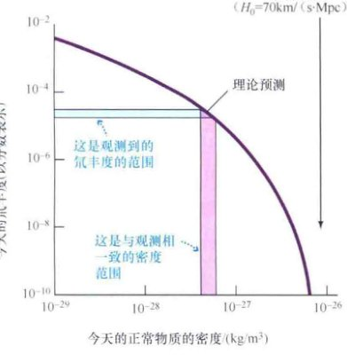
<div class="caption">
<strong>图27.7 氘丰度</strong><br/>
            今天的氘丰度在很大程度上依赖于早期存在的物质的量，而这反过来又决定了宇宙今天的密度。因此，测量宇宙中氘的行为我们提供了物质总密度的估计值。对氘最好的测量在蓝色窄带内，并暗示物质在宇宙中的密度至多为临界值的百分之几。
        </div>
</div>
<p>但在我们根据这个数字跳到任何深远的宇宙结论之前，我们必须做出一个非常重要的限制。正如刚才所描述的，原初核合成只依赖于早期宇宙中质子和中子的存在。因此，氦和氘的丰度测量只告诉我们宇宙中“正常”物质——由质子和中子构成的物质——的密度。这一发现对宇宙的整体组成具有重大的意义。正如我们前面看到的，天文学家已经得出了结论，由于各种各样的原因，物质的总密度正好大约是临界值。(4.5节) 在这种情况下，如果正常物质的密度只有临界值的百分之几，那么我们不得不承认，不仅宇宙中大部分的物质是暗的，而且大部分的暗物质不是由质子和中子组成的。</p>
<p>因此，宇宙中物质的大部分（约90%）明显是以难以捉摸的亚原子粒子的形式存在（例如，在第1章中讨论的，作为暗物质候选体的WIMPs）。而这些粒子我们并不完全了解其性质，其是否真的存在还没有在实验室的实验中被最终证实。(1.6节) 为简便起见，从这里开始，我们将约定，“暗物质”这个词只是指那些未知的粒子，而不是指“恒星类”暗物质，比如黑洞、褐矮星和白矮星（也在第1章中讨论过）——它们是由了解得相对比较充分的正常物质构成的。</p>
<h3>第一个原子</h3>
<p>大爆炸后数万年，辐射不再是宇宙的主要组成部分，物质期开始了。在原子时代的开始，物质由电子、质子、氦原子核（原初核合成形成的）和暗物质组成。温度为数万开尔文——对氢原子的存在而言过于热了（虽然一些氦离子可能已经形成）。在随后的几十万年中又发生了重大变化：宇宙又膨胀了十倍，温度降到几千开尔文，电子和原子核结合形成中性原子。当温度下降到约3000K的时候，宇宙便由原子、光子和暗物质组成了。</p>
<p>原子核和电子结合形成原子的时期被称为<strong>退耦时代</strong> (Decoupling Epoch)，因为正是在这个时代，背景辐射与正常物质分离开来。许多天文学家也将此阶段称为复合期（虽然从技术上来讲，质子和电子在之前从未被结合成原子的形式）。</p>
<p>在早期，物质被离子化，宇宙中充满大量的在所有波长上与电磁辐射频繁相互作用的自由电子。结果，光子跑不了多远就会遇到一个电子，并将其散射出去。实际上，宇宙对辐射是不透明的。物质和辐射被这些相互作用强烈“绑定”——或“耦合”——在一起。在电子与原子核结合形成氢原子和氦原子后，只有特定波长的辐射——与这些原子的谱线相符合的辐射——才能与物质发生相互作用。其他波长的辐射几乎可以永远旅行下去而不被吸收。因此，宇宙变得几乎透明。从那个时候起，绝大部分光子基本上能畅通无阻地穿过空间。随着宇宙的膨胀，辐射一直在冷却，最终成为我们今天所看到的微波背景。</p>
<!-- Section 27.4 -->
<h2>27.4 暴胀的宇宙</h2>
<div class="image-container">

<div class="caption">
<strong>图27.8 辐射-物质退耦</strong><br/>
            当原子形成时，宇宙变得对辐射几乎透明。因此，宇宙背景辐射的观测揭示了当红移是1100、温度低于约3000K时宇宙中的环境。对于我们如何能在宇宙只有140亿岁的情况下看到14000Mpc（460亿光年）之外的空间区域的解释，见详细说明2-1。
        </div>
</div>
<p>在20世纪70年代末，试图拼凑出宇宙演化图景的宇宙学家面临着两个让人不得安宁的难题，它们用标准大爆炸模型不能简单地解释。这些问题的解决导致了宇宙学家重新考虑了自己对极早期宇宙的观点。</p>
<h3>视界和平度问题</h3>
<p>第一个问题被称为<strong>视界问题</strong>，它涉及宇宙微波背景辐射显著的各向同性。(4.7节) 回忆一下，这种辐射的温度几乎是恒定的，在所有方向上，约2.7K。想象在天空中两个相反的方向观测微波背景，如图27.9所示。正如我们刚才看到的，这些辐射最后一次和宇宙中的物质相互作用（在退耦时代）是在宇宙大约40万岁时，当时的宇宙比现在小（也更热）约1100倍——也就是在红移为1100处。如图27.8所示，原子形成的时代创造了一种在宇宙中的“光球”，以约14,000Mpc的距离完全围绕地球——在这个距离上，光子在退耦前与物质发生最后一次相互作用。(详细说明2-1)</p>
<div class="image-container">

<div class="caption">
<strong>图27.9 视界问题</strong><br/>
            微波背景辐射的各向同性表明，当我们现在观测到的辐射离开它们的时候，宇宙中的区域A和B彼此非常相似。但自从宇宙大爆炸以来，没有足够的时间让它们能够彼此相互作用。那么，为什么它们居然看起来一样呢？
        </div>
</div>
<p>问题在于，根据刚才所描述的大爆炸理论，没有很好的理由来解释为什么这些地区实际上应该彼此相似。让我们看一个日常的例子，我们都知道，热量从高温区流向低温区，但需要时间。如果我们在一个房间的一个角落里烧火，我们必须等待一段时间，其他角落才会热起来。最终，房间达到几乎均匀的温度，但必须在火焰的热量——或者，更一般地，这儿有堆火这个信息有时间传播开以后。</p>
<p>类似的道理也适用于图27.9中的区域A和B。这些区域互相分开许多个Mpc，一直没有足够的时间让信息——速度无法比光速更快——从一个地方传递到另一个地方。用宇宙学的说法，这两个地区被称为是在对方的<strong>视界</strong>之外。但是如果是这样，那么它们怎么“知道”它们应该看起来一样呢？因为它们之间没有通信的可能，唯一的选择是，区域A和B本身就很相似——这是宇宙学家不愿做出的假设。</p>
<p>标准大爆炸模型的第二个问题是所谓的<strong>平度问题</strong>。无论 $\Omega_0$ 的精确值是多少，它似乎都非常接近于1——宇宙的总密度相当接近临界值。用时空曲率来描述的话，我们可以断言，宇宙是显著接近平直的。(4.4节) 我们在这里说“显著”是因为，再一次，没有特别的理由宇宙应该形成非常接近临界值的密度。为什么不是临界值的百万分之一或者一百万倍？此外，如图27.10所示，一个宇宙，就算刚开始很接近临界宇宙，但又不与临界宇宙完全重合，其对应的临界曲线很快就会大大偏离临界宇宙，因此，如果宇宙现在接近临界值，它在过去就必然极端接近临界值。（源于暗能量的加速确实在事实上倾向于将宇宙推向临界密度，但暗能量并没有主导宇宙膨胀足够长的时间，以令这一事实改变我们的基本结论）。例如，如果今天 $\Omega_0=0.3$（约等于“已知的”暗物质的密度），那么在核合成的时候，它相对于临界密度的偏离将会只有 $1/10^{15}$ （一千万亿分之一）！</p>
<div class="image-container">

<div class="caption">
<strong>图27.10 平度问题</strong><br/>
            如果宇宙偏离临界密度哪怕只是一点点，这一偏离也会随着时间迅速增长。由于宇宙是像今天这样的如此接近临界值，它必然在过去只偏离临界密度极少的量。
        </div>
</div>
<h3>宇宙暴胀</h3>
<p>正如我们在第27.2节看到的，在非常早的时期，在大统一和普朗克时代，大多数或所有的自然界的基本力是统一的——也就是说，彼此没有什么区别。描述这种统一的各种理论（例如，在详细说明5-1中总结的）预测——事实上，也依赖于——一个特定的量子力学场的存在，一般在粒子物理学的术语中被称为<strong>标量场</strong>。在这一理论中，该场与粒子的相互作用决定了这些粒子的性质。对于我们的目的，我们可以将这些场想象为宇宙力，渗透所有的空间，与宇宙中的自然粒子分开，但又与后者紧密相关。这些场定义了各种自然力之间的区别，并最终设定了统一发生的尺度。</p>
<p>这一切与宇宙学的关系是什么？在20世纪80年代初，物理学家意识到，这些标量场暂时地增加能量到高于其正常的平衡状态是可能的。基于量子水平的随机涨落，宇宙区域能让自己在这个“升高的”状态保持一段时间。在这种情况下，理论表明，宇宙的这些部分会发现自己处在一个非常奇怪和不稳定的状态——空无一物的空间将获得<strong>真空能量</strong>。这些可能看起来抽象，但这些区域是直接关系到我们的——如果理论家们是正确的，我们就生活在一个这样的区域！</p>
<p>在这样的区域内——即我们所在的区域——真空能量的临时出现有严重的后果。在一段很短的时间，如图27.11所示，额外的能量导致该区域以巨大的加速率膨胀。当这种情况持续存在时，随着该区域的增长，真空能量密度几乎保持不变，而膨胀随着时间加速。事实上，该区域的大小翻了许多番。图27.11定性地展示了发生在大统一时代结束附近的膨胀，用了多一倍的时间——大约 $10^{-34}s$。这一不受约束的宇宙膨胀时期被称为<strong>暴胀时代</strong>。</p>
<div class="image-container">
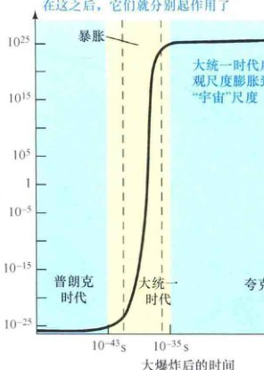
<div class="caption">
<strong>图27.11 宇宙暴胀</strong><br/>
            在暴胀时期，宇宙在极短的时间内极大地膨胀了。之后，它恢复了先前的“正常”膨胀速度，但宇宙的大小已比它暴胀之前大了约 $10^{50}$ 倍。
        </div>
</div>
<p>实际上，尽管这可能看起来很古怪，但我们已经看到，宇宙确实在这样膨胀——即使在一个悠闲得多的空间中。暗能量（宇宙常数和精质）的领先模型都是标量场，它们的非零真空能量造成了在第4章中讨论的宇宙加速膨胀。(4.5节)</p>
<p>最终，标量场回到它的平衡状态，这个区域恢复其正常的真空，暴胀停止了。对图27.11所示的例子，整个事件持续了几乎 $10^{-32}s$，但在这段时间变得不稳定的宇宙的一小块的大小令人难以置信地膨胀了约 $10^{50}$ 倍。暴胀阶段后，宇宙再次恢复（相对）悠闲地膨胀。然而，发生的一些重要的变化将对宇宙的演变产生深远的影响。</p>
<p>尽管如此，量子涨落膨胀成为我们所知道的宇宙这一基本思想现在已相当完善。一些理论家已经走了这么远，表明在普朗克时代的量子涨落可能是导致大爆炸的“扳机”。甚至还有人推测，我们可能生活在一个“自我创造的宇宙”中，它会因为这样的随机涨落而自发地从暴胀中爆发并存在！这类来自绝对空无一物的原始宇宙能量的“统计学”创造，被称为“终极免费午餐”。</p>
<p>注意有这样一种可能——许多理论家甚至认为其可能性很高——并非宇宙的所有部分都经历了暴胀。只有一些区域变得不稳定，造成了巨大的“泡泡”。我们似乎生活在一个这样的泡泡中，外面的宇宙对我们来说很可能是不可知的。今后，我们的“宇宙”一词将仅指这个泡泡和它的内容物。</p>
<h3>对宇宙的影响</h3>
<p>暴胀时代为视界和平度问题提供了一个自然的解决方案。视界问题的解决是因为暴胀区域的宇宙有时间来彼此沟通——因此可以建立类似的物理特性——然后拖着它们互相远离，远远超出彼此的通信范围。例如（在图27.11中再次使用该假设），在图27.9中的区域A和B从创世后 $10^{-32}s$ 就已经脱离了彼此接触，但在那之前，它们是有接触的。如图27.12所示，它们的性质在今天之所以是相同的，是因为它们在很久之前，在暴胀将它们分开之前，是相同的（并且没有这种限制）。</p>
<div class="image-container">

<div class="caption">
<strong>图27.12 暴胀和视界问题</strong><br/>
            暴胀通过将极早期的宇宙——其中的各个部分有时间彼此相互作用，因此已经变得均匀了——的一个小区域膨胀到巨大的尺寸，解决了视界问题。在(a)中，点A和B非常好地位于宇宙的（阴影的）以银河系的最终位置为中心的均匀区域内。在(b)中，暴胀之后，A和B远远超出了视界（用虚线表示），所以从我们的位置它们不再可见。随后，视界膨胀比宇宙作为一个整体的膨胀更快，使得今天(c)A和B只是刚好重新进入我们的视野。它们现在有相似的性质，因为它们在暴胀时代之前就有相似的性质。
        </div>
</div>
<p>自从暴胀结束以来，宇宙已经进一步扩大了 $10^{27}$ 倍，所以现在围绕我们的空间均质区域的大小是约 $10^{51}m (10^{28}Mpc)$ ——比最遥远的类星体远10亿亿亿倍。如图27.12(c)所示，视界的膨胀速度比宇宙快，那么点A和B在现在刚好变得再次可见。随着时间的推移，我们可观测的宇宙会逐渐膨胀到这样一些区域——它们其实很久以前就在我们的视野内，只不过因为暴胀而被瞬间拉出了我们的视野。我们将不得不等待很长的时间——至少 $10^{35}$ 年——才能等来围绕我们的均匀小块的边界再次进入我们的视野。</p>
<p>要了解暴胀如何解决平度问题，让我们回到我们之前的气球类比 (4.2节)。想象你是一个1mm长的蚂蚁，坐在气球的表面上，并随着它膨胀，如图27.13所示。当气球的直径只是几厘米时，你可以很容易地察觉它表面是弯曲的——它的周长只有你自己大小的十几倍。当气球膨胀到、比方说直径几米的时候，其表面的曲率就没那么显著了——但你也许仍然能感觉到。然而，当气球膨胀到直径几千米时，其表面的“蚂蚁大小”的小块会显得相当平整，就像对我们而言，地球表面看上去也很平一样。</p>
<p>现在想象气球膨胀了100亿亿亿亿亿亿倍，如同宇宙在暴胀时期确实经历的那样。你所在的小块的表面现在看起来与一个完美的平面没有任何区别，平整度的偏差不超过 $1/10^{50}$。完全一样的道理也适用于宇宙：因为它已经膨胀了这么多，实际上在我们任何可能观测的尺度上，宇宙都是完美平直的。</p>
<div class="image-container">
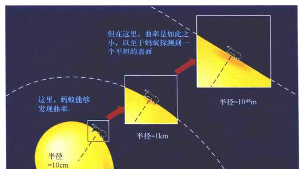
<div class="caption">
<strong>图27.13 暴胀与平度问题</strong><br/>
            暴胀通过一个曲面的极度膨胀解决了平度问题，这里通过一个气球的表面来表示。对于一个在表面上的蚂蚁而言，当膨胀完成时，气球看上去几乎是平的。
        </div>
</div>
<!-- Section 27.5 -->
<h2>27.5 宇宙中结构的形成</h2>
<p>正如恒星形成于星际云的不均匀性——相对于完全均匀密度的偏差，所以星系、星系团、以及更大的结构，也被认为是从膨胀的宇宙物质中小的密度起伏而成长起来的。</p>
<p>这些密度起伏从何而来？根据目前的结构形成理论，它们是极早期宇宙的微观“量子”涨落的结果，并因为暴胀的作用而膨胀到宏观尺度！在一个非常现实的意义上说，紧跟着大爆炸之后的量子宇宙是今天我们看到的我们周围所有宇宙结构的祖先。</p>
<p>给定在原子和星系时代宇宙中的环境（表27.1），宇宙学家计算出，包含超过大约100万倍太阳质量的密度高于平均水平的地区会开始收缩。因此，有一种天然的倾向，百万太阳质量的“前星系”天体会形成。在第3章中，我们学习了这些前星系碎片可能会如何通过相互作用和并合形成星系。(3.3节) 在本章的其余部分，我们将主要关注尺度大得多的结构的形成。</p>
<div class="image-container">

<div class="caption">
<strong>解说图27.14 结构形成</strong><br/>
            宇宙中结构的形成关键依赖于暗物质的存在。(a) 极早期宇宙是暗物质（主要的）和正常物质的混合物。(b) 大爆炸几千年后，暗物质就开始聚集。(c) 最终，暗物质形成大型结构（在这里，由两个高密度的峰指出），普通物质向这里流动，最终形成了我们今天看到的星系。
        </div>
</div>
<p>因此，如图27.14所示，暗物质确定了宇宙中质量的整体分布，聚集成团形成了观测到的大尺度结构，不违反微波背景的任何可观测的限制。然后，在稍后的时间，正常物质被引力吸引到了密度最高的地区，最终形成了星系和星系团。这张图片解释了为什么这么多的暗物质是在可见的星系外面被发现的。发光物质高度集中在密度峰值附近，并在那里主导了暗物质。但宇宙的其余部分大量缺乏正常物质，就像海浪浪峰上的泡沫一样，我们可以看到的宇宙只是总体的一小部分。</p>
<div class="image-container">
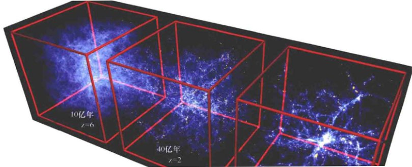
<div class="caption">
<strong>解说图27.15 结构模拟</strong><br/>
            我们今天在宇宙中看到的大尺度结构，是膨胀到了宏观尺度的早期宇宙中量子涨落的直接后果。这些帧显示了一个模拟的 $\Omega_0=1$ 的冷暗物质宇宙中（今天的）一个 $100 \times 100 \times 100 Mpc$ 的正方体的三个视图。正方体随着宇宙膨胀，因此它在所有时候都包含了相同的材料。这三个帧显示了从早期宇宙中小的密度起伏而来的结构的逐步增长，对应大爆炸后三个不同的时间。[V. 斯普林吉尔 (V. Springel)]
        </div>
</div>
<!-- Section 27.6 -->
<h2>27.6 宇宙结构和微波背景</h2>
<p>因为暗物质不直接与光子进行相互作用，所以它的密度变化不会在微波背景上造成大的（因此也是容易观测到的）温度变化。然而，理论表明，退耦之前，宇宙一定充满了只以略高于光速一半的速度穿过空间的声波——正常物质密度与背景辐射场中的微小波动。大多数天文学家认为，这些波动起源于暴胀时代的结束——分布在其不受抑制的膨胀结束后，恢复其“正常”的真空状态时。</p>
<p>因为在这一时期，辐射与物质被紧紧相互绑定，物质密度中的波动对应辐射场的温度波动，当物质和辐射终于在红移1100处“分手”时，这些特征被“烙印”在微波背景中。结果，宇宙学模型预测，微波背景中应该有微小的“涟漪”——天空中的不同位置之间应该有百万分之几十的温度变化。</p>
<h3>背景辐射的涟漪</h3>
<p>这些涟漪太小，直到20世纪80年代后期还无法准确测量，虽然宇宙学家相信它们会被发现。1992年，经过近两年的仔细观测，COBE团队宣布，预期的涟漪确实已经被检测到了。(4.7节) 温度变化是微小的——在天空中的不同地方只有百万分之30~40开尔文——但它们的确存在。COBE结果在图27.16中显示为微波天空的温度地图。由于地球的运动造成的温度变化（见图4.18）和银河系的射电发射已经被扣除，并且温度相对于平均值的偏差也被显示了出来。</p>
<div class="image-container">

<div class="caption">
<strong>解说图27.16 宇宙微波背景图</strong><br/>
            这一幅整个天空的宇宙微波背景温度波动的COBE地图，以黄色显示了比平均值热的区域，以蓝色显示了比平均值冷的区域。显示出来的温度波动的总范围极小，实际上只有土百万分之200开尔文。由于地球的运动造成的温度变化和银河系的射电发射已经被扣除。[美国国家航空航天局 (NASA)]
        </div>
</div>
<p>COBE看到的涟漪与图27.15所示那样的计算机模拟相结合，预测了今天的结构，与我们在周围看到的超星系团、巨洞、纤维和“宇宙长城”是一致的。虽然COBE数据被局限在相对较低的分辨率上（大约7°），但它对涟漪的详细分析也支持暴胀理论的关键预测——宇宙刚好处在临界密度，因此空间是平直的。由于这些原因，在宇宙学领域，COBE观测的重要性与微波背景的发现本身是同一级别的。COBE计划的研究人员因为他们的开创性工作，荣获了2006年诺贝尔物理学奖。</p>
<div class="image-container">
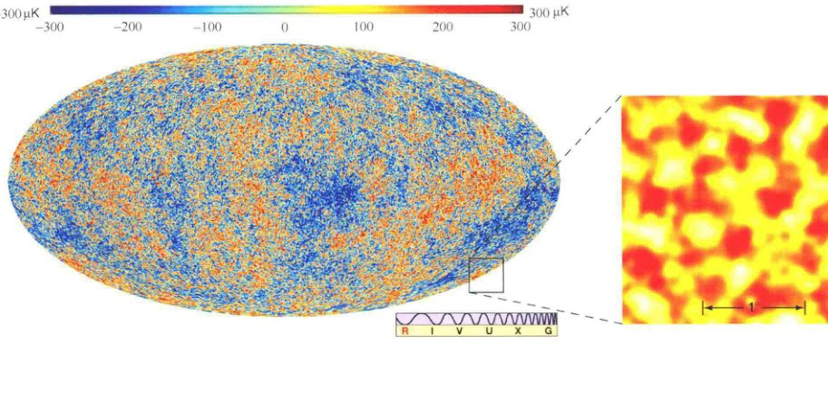
<div class="caption">
<strong>互动图27.17 早期结构</strong><br/>
            普朗克探测器在频率高达90GHz（3mm波长）所看到的整个微波天空，可直接与图27.16中所示的较低分辨率的COBE地图进行比较。右边的插入图显示天空中的一小块的一张更高分辨率的地图，是由地基的宇宙背景成像仪在30GHz（1cm波长）处获得的。明亮的斑点是在宇宙年龄为大约40万年的时候，宇宙中比平均密度稍高的区域，它们最终会收缩形成星系团。[欧洲航天局 (ESA)、宇宙背景成像仪 (CBI)]
        </div>
</div>
<p>这两张高分辨率地图显示了几百微开尔文的温度波动，特征角尺度约1°。该温度范围比COBE看到的波动更大，因为COBE的低分辨率在大面积的天空中有效地平均了数据，并模糊了在更高的分辨率下能看到的波峰和波谷。</p>
<p>在数据中，不同角尺度下明显的结构数量显示了一个约1°的波峰——几乎是你的肉眼在图27.17中看到的极限。这个尺度与早期宇宙的环境以非常重要的方式相关联：它对应一个声波在暴胀结束和退耦这段时间内可以旅行的最大距离。根据合理的假设，宇宙学家可以计算这个距离，并允许观测和理论之间进行直接比较。事实上，尽管WMAP和普朗克探测器对宇宙学参数的详细测量略有不同，观测到的1°波动与一个 $\Omega_0=1$ 的宇宙的理论预测非常一致——有大约30%的物质和70%的暗能量，正如在第4章和本章的前面所指出的。这有力地支持了暴胀的推论：$\Omega_0$ 必然非常接近1，它们之间的误差非常小。</p>
<h3>物质震荡</h3>
<p>对退耦时代的进一步分析可以让我们获得关于宇宙的额外的重要信息。更详细地考虑早期（退耦前）宇宙中的声波会发生什么。想象空间中的一个小区域，比周围稍微密集。正如我们在第27.5节看到的，这个过密团块中的暗物质有一天会成长为一个星系，但这里的关注点在同一区域的正常物质和辐射上，因为辐射与物质强烈耦合，辐射“推开”正常物质，使其迅速向外膨胀成一个壳，如图27.18所示。暗物质团块的引力因太弱而不能阻止壳层逃离。这种相互作用会造成空间稍微过密区域的振荡，发出的波很像一个石子击中一个池塘的表面——像一口钟在空间和时间中响起，其音色随着宇宙的膨胀而变得更安静和深沉。这是本节开头讨论的宇宙声波的起源——它有一个很拗口的技术名字，叫作<strong>重子声学振荡</strong>。</p>
<div class="image-container">
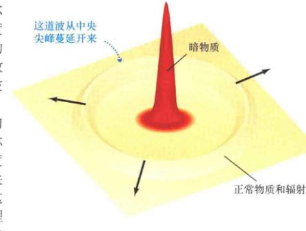
<div class="caption">
<strong>图27.18 声学振荡</strong><br/>
            这张草图是一幅二维的计算机合成图，展示了在早期宇宙中被辐射推离一个暗物质团块的正常物质的三维波。在现实中，无数这样的波会像这般蔓延在整个天空中任何暗物质集中的地方。
        </div>
</div>
<p>这一结果的重要性在于，该特征被烙印在整个宇宙的星系分布中，并且在所有红移上。图27.19显示了这样的涟漪是如何随着宇宙的膨胀而成长的。今天，它的半径将是大约150Mpc。如果这些特征可以在不同红移被检测到，它们将构成一个新的“标准尺子”，精确地告诉我们过去不同时间的宇宙尺度。因此，它代表探测宇宙膨胀的另一种有力的手段——独立于第4章所描述的超新星的研究。(4.5节)</p>
<div class="image-container">
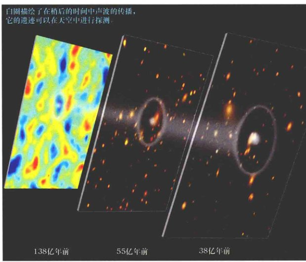
<div class="caption">
<strong>图27.19 声学遗迹</strong><br/>
            重子声学振荡（白圈）的记录允许天文学家追溯宇宙的历史。这个模拟显示了早期宇宙的小的密度变化（左）是如何成长为在更近的时候看到的星系团、“宇宙长城”和纤维的。[Z. 罗斯特敏 (Z. Rostomian)/斯隆数字化巡天 (SDSS)]
        </div>
</div>
<section class="concept-check">
<h4>概念理解检查</h4>
<p><strong>✔ 对微波背景波动的观测告诉我们关于宇宙结构的什么知识？</strong></p>
</section>
<!-- Sidebar: Ultimate Question -->
<aside class="ultimate-question">
<h3>终极问题</h3>
<p>宇宙是如何开始的？它实际上有一个起源吗？或者它是永远存在的吗？没有人知道答案。在有记录的历史上第一次，人类正在使用逻辑、理性，以及一些非常复杂（且昂贵）的实验设备，来尝试解决这些基本问题。很难衡量什么时候可能会迎来成功，但科学家们现在都在充分参与这个任务的这一事实，描绘了现代科学探索的惊人视野。</p>
</aside>
<!-- Chapter Review -->
<section class="chapter-unit">
<h2>章节回顾</h2>
<h3>小结</h3>
<ul>
<li>目前，宇宙主要被暗能量主导，暗能量密度是物质密度的两倍多，暗能量和物质密度都大大超过了辐射的等效质量密度。数十亿年前，当时的宇宙体积更小，宇宙是由<strong>物质主导</strong>的(p.118)。然而，因为辐射随着宇宙膨胀而红移，早期的辐射密度更大。因此，早期的宇宙是由<strong>辐射主导</strong>的(p.119)。</li>
<li>在大爆炸后的最初几分钟，物质通过<strong>粒子对产生</strong>(p.119)过程而从原始火球中形成出来。在早期宇宙中，物质和辐射被这个过程联系在一起。随着温度下降到低于创建它们的阈值，粒子和力从背景辐射中“冻结出来”。今天物质的存在，意味着早期的物质和反物质必然不等量。</li>
<li>依照现在的物理学，宇宙的物理状态一直往回追溯到大爆炸后大约 $10^{-43}s$ 都是可以被理解的。而在那个时间之前，自然界的四种基本力——引力、电磁力、强力、弱力——是无法区分的，目前还没有理论可以描述这样的极端条件。随着宇宙的膨胀，其温度下降，基本力变得彼此不同。首先是引力，接着是强力，然后是弱力和电磁力分离开来。随后，原子核、原子，以及最终注定要成为星系的大的物质团块出现了。随着宇宙的持续降温，形成了恒星。</li>
<li>宇宙中所有的氢都是原初的，它随着宇宙的膨胀和冷却，由辐射形成。今天在宇宙中观测到的氦大多是原初的，在大爆炸后几分钟的早期宇宙中，由<strong>原初核合成</strong>(p.125)创建。一些氘也在这较早的时间形成了。它以“正常”物质（相对暗物质而言）的形式提供了当今宇宙密度的敏感指标。对氘的研究表明，正常物质最多可以占到临界密度的3%或4%。那么，从星系团研究中推断出的剩余质量必然是由暗物质以形成于某些特别早期阶段的未知粒子的形式所组成的。</li>
<li>当宇宙比今天小约1100倍时，温度变得足够低，原子得以形成。在那时，背景辐射（当时还在光学波段）从物质中<strong>退耦</strong>(p.127)，宇宙变得透明。现在组成微波背景辐射的光子从那时起就自由地穿过空间旅行至今。</li>
<li>在很早期，宇宙经历了一个短暂的快速膨胀，被称为<strong>暴胀时代</strong>(p.130)。在这期间，宇宙的大小增加了巨大的倍数—— $10^{50}$ 倍或更多。<strong>视界问题</strong>(p.128)是如下事实：按照标准（即非暴胀的）大爆炸模型，没有很好的理由支持互相分开很远宇宙的不同部分是相似的。暴胀解决了视界问题，它认为是早期宇宙一个均匀的小块极大地扩大成了现在的样子。该小块仍然是均匀的，但它现在远远大于我们今天所能看到的宇宙部分。暴胀也解决了<strong>平度问题</strong>(p.129)——没有明显的理由表明，为什么宇宙目前的密度如此接近临界值。暴胀意味着宇宙的密度实际上正好是精确临界的。</li>
<li>宇宙中的大尺度结构形成于暗物质的密度波动凝聚成块，并成长形成我们观测到的结构的“骨架”时。然后，正常物质流入空间中密度最高的区域，最终形成了我们现在看到的星系。宇宙学家将暗物质分为<strong>热暗物质</strong>和<strong>冷暗物质</strong>(p.134)，取决于辐射期结束时暗物质的温度。为了解释观测到的宇宙中的大尺度结构，大多数暗物质必须是冷的。</li>
<li>微波背景的“涟漪”是早期辐射场的密度不均匀性的印记。这些涟漪被COBE卫星观测到。由WMAP飞船进行的后续观测提供了许多宇宙学参数的精确测量，并大力支持了暴胀的预测：我们生活在一个平直的临界密度宇宙中。对微波背景辐射的详细观测，结合对宇宙中大尺度结构的研究，为我们提供了基本宇宙学参数的精确信息。</li>
</ul>
</section>
<!-- Exercises -->
<section class="exercises">
<h2>复习与讨论</h2>
<ul class="question-list">
<li><strong>LO1</strong> 宇宙被辐射主导了多长时间？当这个时期结束时，宇宙有多热？</li>
<li>暗能量在极早期宇宙中的作用是什么？</li>
<li><strong>LO2</strong> 物质是怎么随着宇宙膨胀从早期辐射场中“冻结出来”的？</li>
<li><strong>LO3</strong> 描述物质和辐射的相对重要性是如何随着宇宙大小的增加而改变的。</li>
<li><strong>LO4</strong> 第一个氦原子核是在何时、如何形成的？</li>
<li>为什么所有恒星，无论其重元素丰度如何，看起来其质量都包含至少四分之一的氦？</li>
<li>为什么在早期宇宙中没有形成越来越重的元素，如同在恒星中那样？</li>
<li><strong>POS</strong> 我们怎么知道宇宙中大部分物质不是“正常”的？</li>
<li>第一个原子是何时如何形成的？</li>
<li><strong>LO5</strong> 我们怎样才能观测到宇宙变得透明的那个时代？</li>
<li><strong>LO6</strong> 什么是暴胀时期？在那段时间，早期宇宙发生了什么？</li>
<li><strong>POS</strong> 暴胀如何解决视界和平度问题？</li>
<li>关于宇宙的总密度，暴胀告诉了我们什么？</li>
<li><strong>LO7</strong> 暗物质和大、小尺度结构的形成之间的联系是什么？</li>
<li><strong>LO8 POS</strong> 由COBE和WMAP的实验取得的关键测量有哪些？</li>
</ul>
<h2>概念自测：选择题</h2>
<ul class="question-list">
<li>1. 在诞生后，宇宙紧接着：(a) 被光子主导；(b) 主要由质子组成；(c) 有等量的物质和反物质；(d) 形成恒星和星系。</li>
<li>2. 现今的大统一理论包含了除哪个力之外的所有基本力？(a) 强力；(b) 弱力；(c) 电磁力；(d) 引力。</li>
<li>3. 大爆炸后约50万年，宇宙冷却到了什么程度？(a) 质子和电子能结合形成原子；(b) 粒子-反粒子的湮灭终止；(c) 气体能凝聚形成恒星；(d) 碳冷凝形成尘埃。</li>
<li>4. 标准大爆炸模型面临的一个问题是：(a) 星系红移；(b) 到处的温度都几乎完全一样；(c) 宇宙在中心最热；(d) 星系将永远膨胀下去。</li>
<li>5. <strong>VIS</strong> 根据我们的最佳估计，图27.10（“平度问题”）中最能描述宇宙的线是：(a) 加速；(b) 开；(c) 临界；(d) 闭。</li>
<li>6. 宇宙的密度很可能主要由下列哪项构成？(a) 氢；(b) 电磁辐射；(c) 暗能量；(d) 冷暗物质。</li>
<li>7. 标准大爆炸模型的视界问题是通过令宇宙怎么样而如何解决的？(a) 加速；(b) 在其存在的早期迅速暴胀；(c) 在温度上有微小但显著的波动；(d) 是几何平直的。</li>
<li>8. 我们在宇宙中观测到的结构是下列哪项的结果？(a) 很久以前暗物质聚集；(b) 星系碰撞；(c) 电子冻结出来；(d) 在早期宇宙中辐射主导。</li>
<li>9. 在早期宇宙中没有形成比锂更重的元素，因为温度：(a) 过高；(b) 太低；(c) 与密度不相关；(d) 不稳定。</li>
<li>10. 早期宇宙中物质和能量聚集的结果是：(a) 原子形成；(b) 迅速暴胀；(c) 虽小但可观测的红移；(d) 更低的温度。</li>
</ul>
<h2>问答</h2>
<ul class="question-list">
<li>1. 在将来会分别成为银河系中心和室女星系团中心的点，在退耦时它们之间的距离是多少？（它们现在相距18Mpc）</li>
<li>2. 在宇宙的规模是现在的千分之一时，宇宙辐射场的等效质量密度是多少？（提示：不要忘了宇宙学红移！）</li>
<li>3. 在(a)退耦时、(b)核合成开始时，物质和辐射，谁主导了宇宙，密度上的倍数是多少？（假设今天为临界密度。）</li>
<li>4. 生产电子-正电子对的阈值温度是约 $6 \times 10^9 K$。一个质子的质量比电子大1800倍，计算质子-反质子对产生的阈值温度。</li>
<li>5. 在核合成时代开始时、背景辐射的峰值在什么波长？该波长位于电磁波谱的哪个部分？</li>
<li>6. 在原初核合成时代，从氘第一次可以生存下去时到所有的核反应停止时，宇宙的体积膨胀了多少倍？在这期间，宇宙的物质密度减少了多少倍？</li>
<li>7. 根据表2.1，对应退耦时代宇宙的“光球”目前位于距我们约14,000Mpc处（图27.8）。那么，当我们今天看到的背景辐射被发射时，光球上的某一个点离我们多远？</li>
<li>8. 在图27.17的插入图中，明显斑点的角直径大约为20'。如果这些斑点代表退耦（红移=1100）前后的物质团块，估计团块在退耦时的角直径，假设欧几里得几何适用。</li>
</ul>
<h2>实践活动</h2>
<p><strong>协作项目</strong><br/>
        讨论生活在将永远膨胀下去的无限宇宙和一个封闭的、空间有限的、总有一天会坍缩的宇宙的哲学差异。这两种可能性是否都有令人难以接受的方面？根据宇宙学观测的当前状态，似乎宇宙是前者的可能性更大。我们目前的模型直接依赖于两个量——暗物质和暗能量——它们的本质仍然是未知的。你对我们当前的宇宙模型有多大信心，是否认为它已经基本“确定”了？未来将不会再有大的变化了？</p>
<p><strong>个人项目</strong><br/>
        上网查看有关稳恒态宇宙的情况，它在20世纪50年代和60年代有着一定的知名度。它与标准的大爆炸模型有什么不同？你能找到稳恒态模型和我们目前对宇宙的看法之间有什么相似之处吗？为什么你认为，稳恒态模型在今天不会被广泛接受？</p>
</section>
</article>